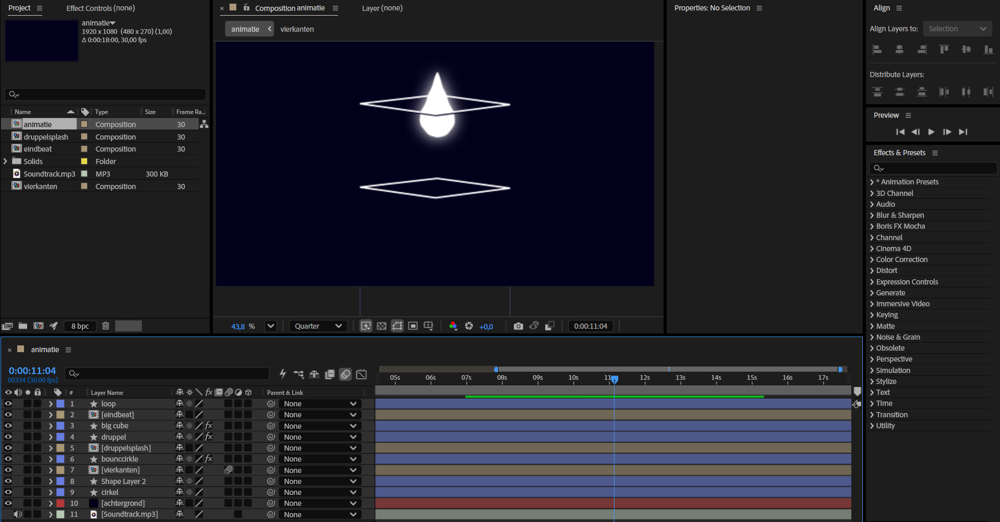

Music Match
Voor deze opdracht heb ik een music match video gemaakt in Adobe After Effects. De video duurt ongeveer
18 seconden en is volledig afgestemd op het ritme en de beat van de muziek. Tijdens het monteren heb ik
verschillende beelden, effecten en overgangen gesynchroniseerd met de muziek, zodat elke beweging op het
juiste moment plaatsvindt.
Het doel van deze opdracht was om beter te leren werken met timing, keyframes en animaties in After
Effects. Door de beelden nauwkeurig af te stemmen op de muziek ontstaat er een dynamische en
aantrekkelijke video.
Ik heb gelet op het tempo van de muziek en geprobeerd om de visuele effecten de
energie van het nummer te laten versterken.
